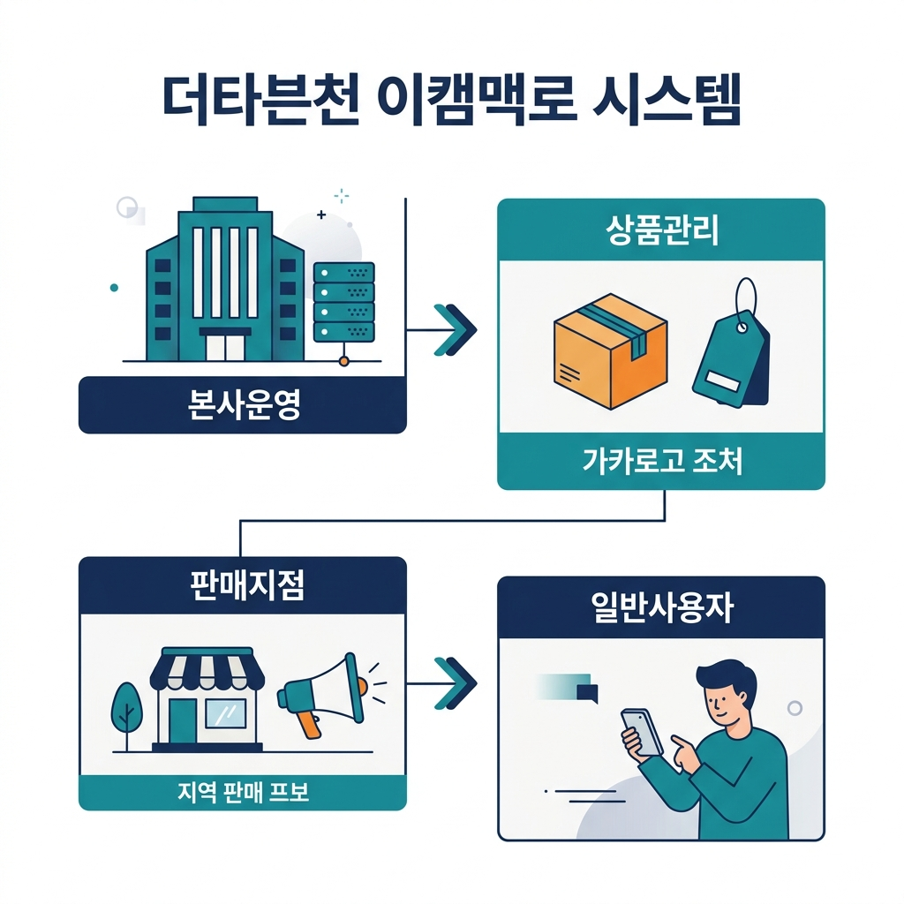

[본사 - 지점 - 구매자로 이어지는 전체 비즈니스 흐름도]
본사 관리자가 지점 관리 메뉴에서 지점 정보(지점명, 토스 키 등)와 해당 지점을 운영할 관리자 계정 정보를 입력하여 지점을 생성합니다.
구매자는 특정 지점의 상점 도메인이나 앱으로 접속하여 상품을 조회하고 주문합니다. 주문과 결제 시 해당 지점의 고유 식별자(BRANCH_ID)와 결제 키(TOSS_CLIENT_KEY)가 사용되어 지점별로 독립적인 결제가 이루어집니다.
지점 판매자는 대시보드를 통해 본사에 입금해야 할 총 원가를 확인합니다. 본사 관리자가 입금 확인 및 배송 처리를 진행하면, 구매자에게 "결제 완료! 배송 시작" 알림이 발송됩니다.